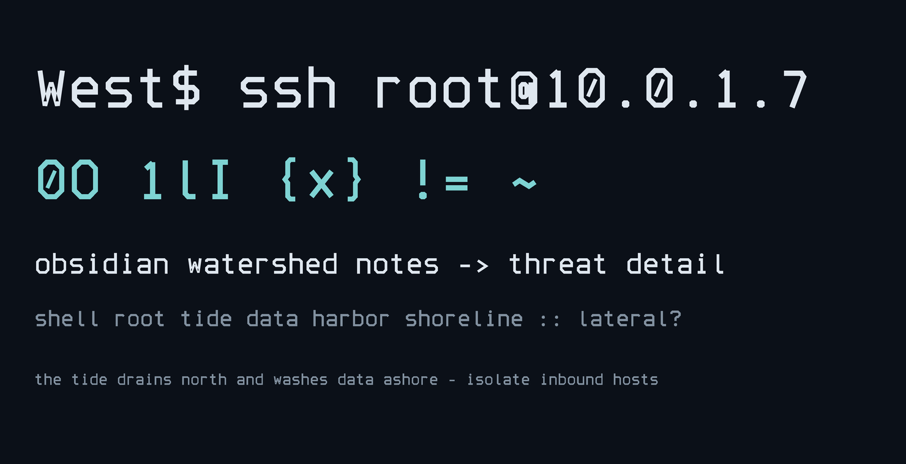
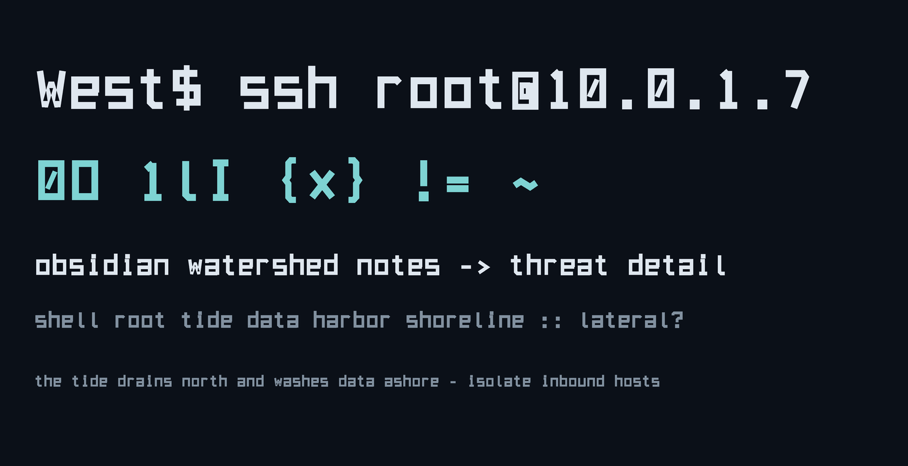
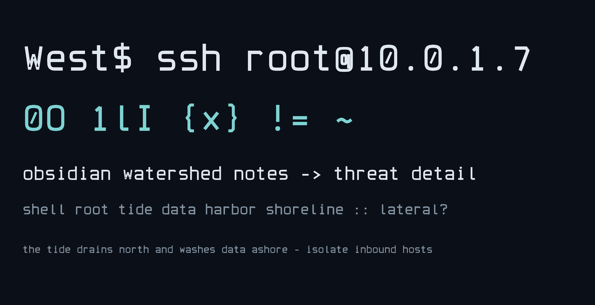

45° cut corners, octagonal rounds — sci-fi terminal energy, edges like volcanic glass. Distinctive in headings, still calm enough for long notes.

Square corners, heavy strokes — chunky DOS/CRT nostalgia. Loudest of the three; great for headers and terminals, heavier as body text.

Rounded geometric forms — quiet and highly readable, closer to a classic coding font. The tech personality lives in details: slashed zero, square dots, angular tilde.
